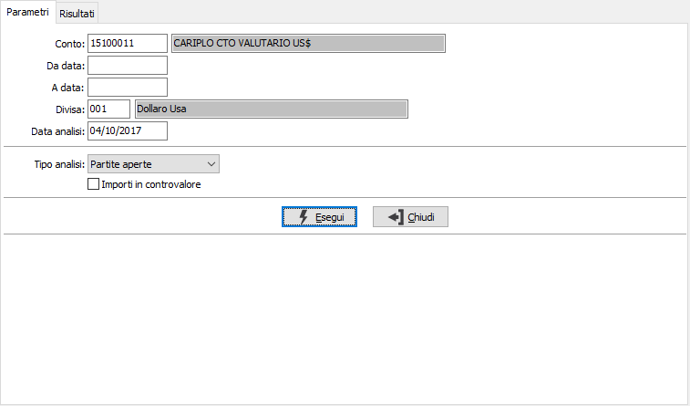
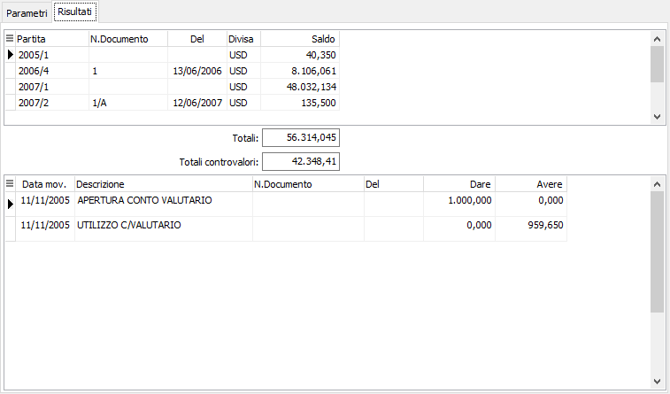

Analisi partite contabili
Il programma di analisi partite contabili visualizzano i movimenti relativi alle partite coerenti con i parametri di selezione inseriti.
Il programma si articola su una prima finestra video Parametri, in cui vengono fornite le informazioni necessarie per effettuare le selezioni, ed una seconda finestra video Risultati, in cui vengono visualizzate le partite ed i movimenti relativi a ciascuna partita.
Cliccando su una delle righe partita evidenziati, è possibile accedere interattivamente alla manutenzione delle scadenze relative alla patita attiva.
Finestra video Parametri

CONTO: campo obbligatorio per inserire il codice del sottoconto, presente nell'anagrafica, di cui si intendono visualizzare i movimenti sulle partite. Sul campo è attiva la funzione di ricerca a video F9
DA DATA: eventuale data di registrazione contabile da cui deve iniziare l’analisi dei movimenti delle partite, relativamente al sottoconto indicato. Confermando a vuoto, l’analisi inizia dal primo movimento contabile valido.
A DATA: eventuale data di registrazione contabile a cui deve terminare l’analisi dei movimenti delle partite, relativamente al sottoconto indicato. Confermando a vuoto, l’analisi termina con l’ultimo movimento contabile valido.
DIVISA: codice obbligatorio della divisa di cui devono essere visualizzate le partite. Viene proposta automaticamente la divisa contenuta nell’anagrafica del sottoconto, che può essere variata a cura dell’utente nel caso in cui il sottoconto indicato abbia partite in varie divise. Sul campo è attiva la funzione di ricerca a video F9.
DATA ANALISI: indicare la data in cui viene effettuata l'analisi (viene proposta la data di sistema, modificabile).
TIPO ANALISI: combo box per definire lo stato delle partite da analizzare. Valori ammessi:
Partite aperte
Partite chiuse
IMPORTI IN CONTROVALORE: check box per definire in quale divisa devono essere visualizzate le partite. Valori ammessi:
vuoto = importi in divisa
spunta = importi in divisa di conto
Indicati tutti i parametri di selezione ritenuti opportuni, occorre avviare la selezione premendo il bottone Esegui. Viene quindi visualizzata la finestra video Risultati:
Finestra video Risultati

La finestra video è suddivisa in due sezioni. Nella sezione superiore vengono visualizzati, su un rigo, i dati di sintesi delle partite coerenti con i parametri di selezione indicati. Vengono visualizzati anno e numero della partita; numero del documento; data del documento, divisa ed il saldo della partita se ancora aperta. In calce alla sezione, il totale scoperto.
Nella sezione inferiore vengono visualizzati i movimenti relativi alla partita attiva, ovvero a quella evidenziata nella sezione superiore. Scorrendo le partite tramite freccia giù e freccia su nella sezione superiore, il contenuto della sezione inferiore cambia al cambiare della partita.
Cliccando due volte sulla partita evidenziata nella sezione superiore, si accede interattivamente al programma di Manutenzione movimenti per visualizzare i dettagli scadenze della partita attiva.